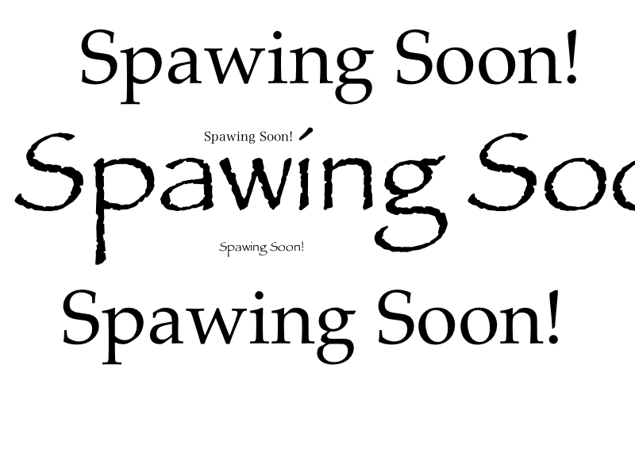

{% for post in paginator.posts limit: 10 %}

  <div class="wrapper style1 first">
        <article class="container" id="top">
          <div class="row">
            <div class="4u">
              <span class="image fit"></span>
            </div>
            <div class="8u">
                <h2><strong>{{ post.title }}</strong></h2>
              <h4>{{ post.date | date_to_long_string }}</h4>
                  <p>
                    <a href="{{ post.url }}">Read Post</a>
                    
                  </p>
            </div>
          </div>
        </article>
  </div>

{% endfor %}
<div class="row-fluid">
  <div class="span12">
    <div class="pagination">
      <ul>
        {% if paginator.previous_page %}
          {% if paginator.previous_page == 1 %}
          <li><a href="/">Prev</a></li>
          {% else %}
          <li><a href="/page{{ paginator.previous_page }}">Prev</a></li>
          {% endif %}
        {% else %}
        <li><span class="disabled">Prev</span></li>
        {% endif %}
        {% if paginator.page == 1 %}
        <li><span class="active">1</span></li>
        {% else %}
        <li><a href="/">1</a></li>
        {% endif %}
        {% for count in (2..paginator.total_pages) %}
          {% if count == paginator.page %}
          <li><span class="active">{{ count }}</span></li>
          {% else %}
          <li><a href="/page{{ count }}">{{ count }}</a></li>
          {% endif %}
        {% endfor %}
        {% if paginator.next_page %}
        <li><a href="/page{{ paginator.next_page }}">Next</a></li>
        {% else %}
        <li><span class="disabled">Next</span></li>
        {% endif %}
      </ul>
    </div>
  </div>
</div>